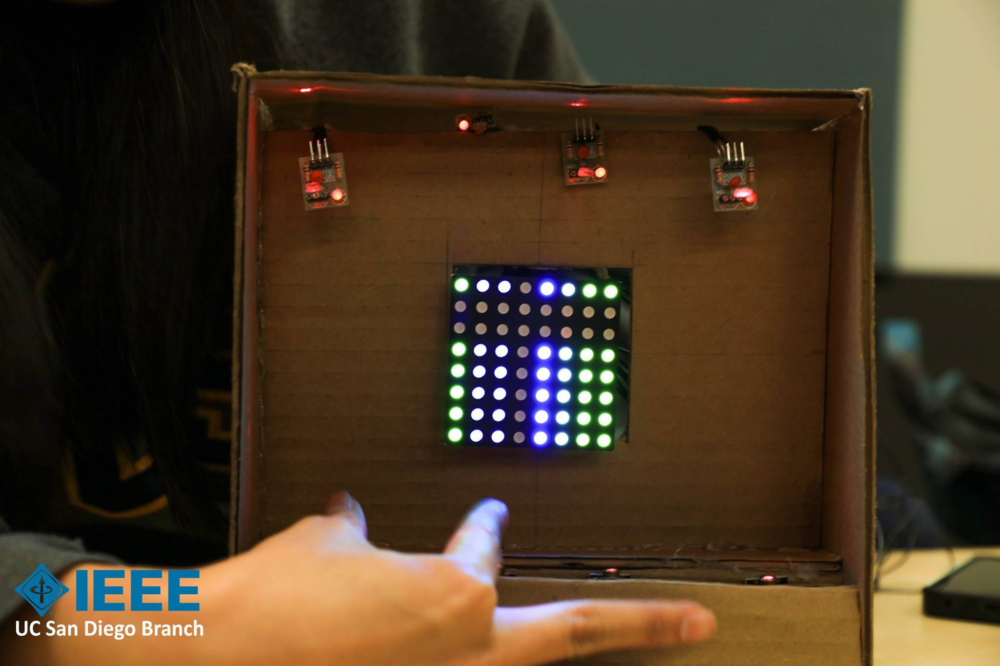
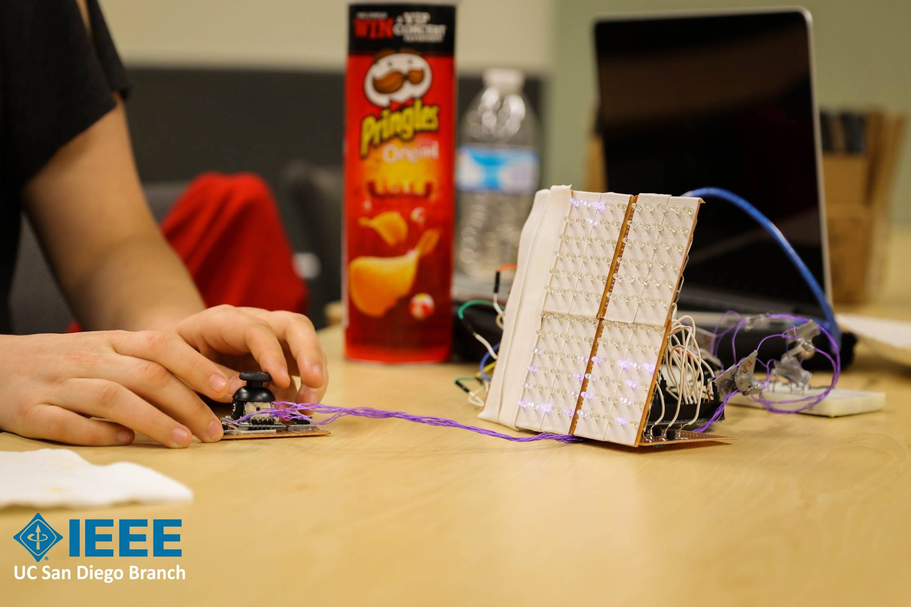
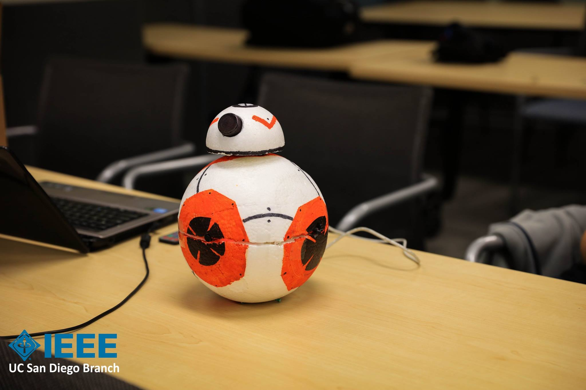
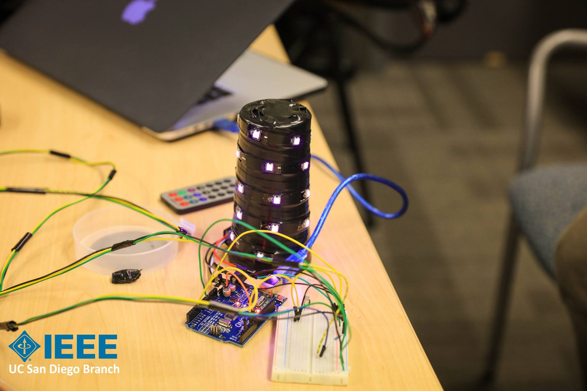
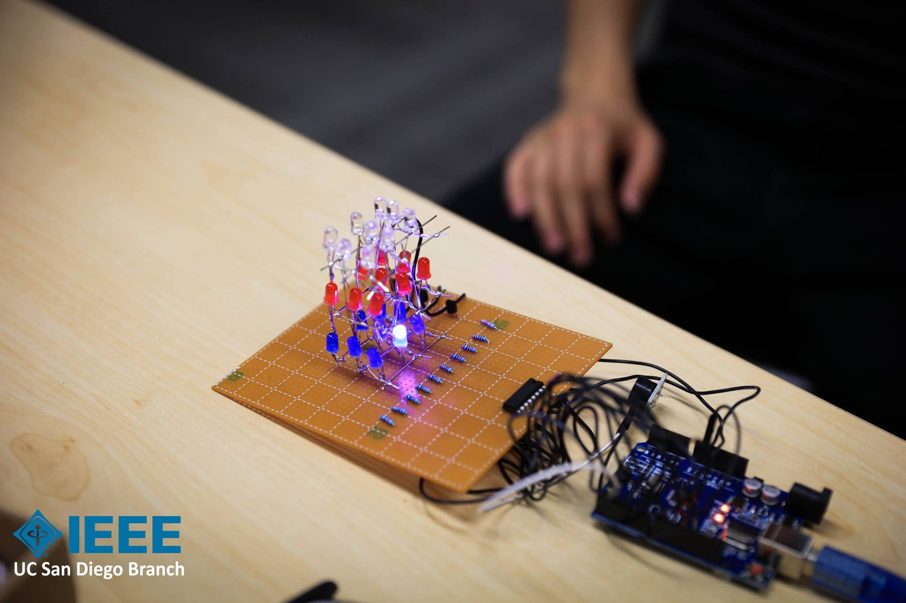
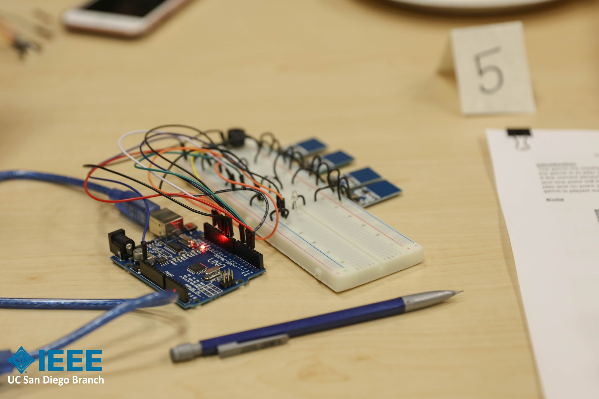
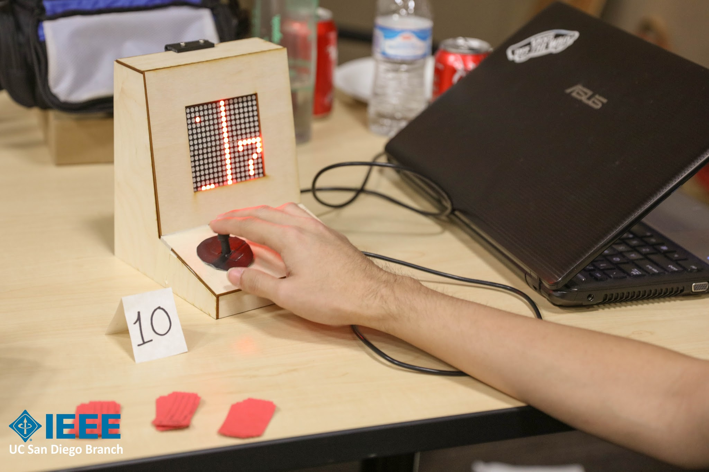

Quarterly Projects
Ten-team project competitions over the course of ten weeks.
Concept:
The role of Quarterly Project chair was one that I pioneered for UCSD's branch of IEEE. The concept was that I would organize and run a project competition consisting of ten teams of three people. The projects would run for ten weeks using a very limited budget. Teams would be selected to prioritize applicants without prior project experience in order to prepare participants for the more complicated annual projects. My primary duties as Quarterly Project chair were to do budgeting and reimbursement for each team, to provide technical support for both programming and electronic problems, holding workshops to teach basic embedded programming and electronics skills, and handling administrative issues such as team member withdrawal and competition organization.
Quarterly Project 1: Interactive Art Project:
Each quarterly project is assigned a theme. The themes are intentionally broad in order to allow teams more freedom with their projects. For the first quarter, the theme was Interactive Art Project. Because the program was new, sign-ups were low and only nine teams of three people were formed. The teams each had a budget of $50, an Arduino, and a set of peripherals and sensors. Teams were required to submit project proposals to ensure that their designs were achievable within the scope of the project. Additionally, I provided guidance in the design portion of the teams' projects. The quarter culminated in a showcase displaying the completed projects.
Quarterly Project 2: Games:
The theme for the second Quarterly Project competition was games. After the success of the first Quarterly Projects, the applicant pool increased from 27 applicants to 60 applicants and continues to increase each quarter. Ten teams of three people were selected and the projects were structured in a similar manner to the first Quarterly Projects. The second Quarterly Projects concluded with a project competition in which each person present at the competition was given two tickets to distribute to the team or teams of their choosing. First, second, and third place winners were selected as by counting which teams had the most tickets.
Gallery of Selected Team Projects:

Quarterly Projects 1: A laser harp with an 8x8 RGB display panel. Disrupting the beams of the lasers creates different tones and changes the output on the display.

Quarterly Projects 1: An LED array with a joystick that executes a drawing application and other graphics.

Quarterly Projects 1: A model of BB-8 from Star Wars that flashes LEDs, rotates its head, and plays noises based on proximity or IR remote.

Quarterly Projects 1: A tower of RGB LEDs that responds to voice level by increasing height and intensity of LEDs. Also has other graphics functions for the LEDs.

Quarterly Projects 1: A 3x3x3 cube of LEDs that plays a preset show.

Quarterly Projects 2: A game in which the players must use the capacitive sensors to replicate a song.

Quarterly Projects 2: A rhythm game in which players must replicate the order of the lights before the timer runs out.

Quarterly Projects 2: An arcade cabinet with Pong.